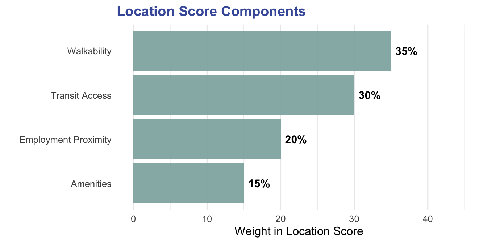
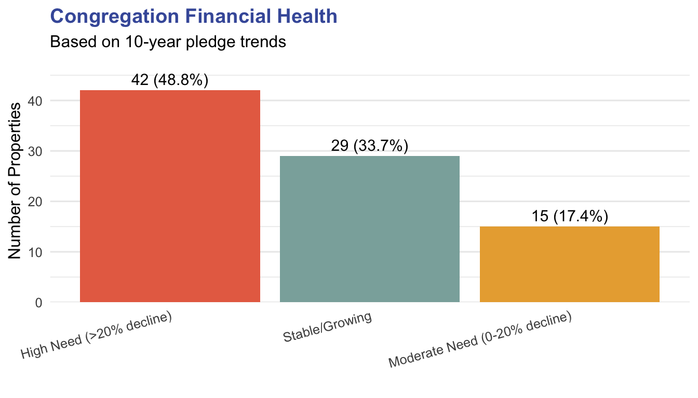

Understanding the Development Criteria
Why These Factors Matter
The development potential score is calculated using seven key criteria, each weighted according to its importance in determining development viability. Our scoring methodology, as outlined in the analytical framework of this report, reflects decades of real estate development experience and incorporates both market realities and mission-aligned priorities. Each criterion was selected to balance financial viability with community impact, ensuring that recommended properties can support sustainable development while serving congregational needs.
Property Size: The Goldilocks Principle
Weight: 20%
Optimal Range: 0.5-5 acres
Properties that are just right
for development.
Not too small to be economically viable, not too large to be financially unwieldy.

Why This Matters:
- Too small (<0.5 acres): Limited development options, high per-unit costs
- Optimal (0.5-5 acres): Maximum flexibility and economic efficiency
- Too large (>10 acres): Requires significant capital, complex phasing
Property size significantly influences development feasibility, but bigger isn’t always better. Properties under a quarter-acre typically lack the critical mass needed for financially viable development—construction costs per unit rise sharply, and parking or open space requirements become impossible to meet. Conversely, parcels exceeding 10 acres often present unique challenges: they may require complex phasing, demand substantial upfront capital, or face community resistance to density.
Current Use: Identifying Low-Hanging Fruit
Weight: 25%
Optimal Use: Vacant or nearly vacant with access to infrastructure
Properties with minimal current utilization represent immediate opportunities.
| Current Use | Score | Rationale |
|---|---|---|
| Parking Lot | 95 | Immediate development potential, minimal displacement |
| Open Space | 90 | Low-value use, easy conversion |
| Mixed/Other | 60 | Varies by specific circumstances |
| Residence | 40 | Displacement considerations |
| School | 35 | Active community use |
| Church (primary) | 30 | Core mission function |
| Cemetery | 5 | Restricted use, not developable |

Highest Potential: Parking Lots and Open Space
Not all church property serves its highest and best use. Surface parking lots represent prime redevelopment opportunities—they’re already cleared and graded, typically have minimal environmental constraints, and often sit underutilized six days per week. A parking lot that serves 200 congregants on Sunday morning but stands empty Monday through Saturday represents an enormous opportunity cost.
Open space scores similarly high, particularly when it’s amenity-free lawn rather than programmed recreation or memorial gardens. These properties can be re-imagined while potentially retaining some green space within new development.
Location Quality: Following the Market
Weight: 20%


Key Metrics: Walkability Score and Transit Access
Real estate development fundamentally responds to location. A walkable, transit-rich site commands higher rents, attracts more diverse tenants, and often qualifies for density bonuses or reduced parking requirements—all factors that improve project economics.
Walkability scores measure proximity to everyday needs: grocery stores, schools, employment centers, healthcare. High walkability (15-20 on our scale) indicates a property can support car-light or car-free households, expanding the potential tenant base to include young professionals, seniors aging in place, and lower-income families for whom car ownership is cost-prohibitive.
Transit access amplifies these benefits. Properties within a quarter-mile of frequent bus service or half-mile of rail stations can often negotiate reduced parking requirements with municipalities—a significant cost savings when structured parking runs $25,000-$40,000 per space to construct.
Most parcels in the portfolio fall below the high-walkability range, but a number showed promise in this category.
Financial Need: Aligning Development with Mission
Weight: 15%

Priority: Congregations with Declining Resources
This criterion explicitly centers mission over pure market return. Congregations experiencing sustained pledge declines often face a difficult reality: their historic buildings demand expensive maintenance, but shrinking budgets make upkeep increasingly burdensome. Many such congregations sit on valuable real estate that could, through thoughtful development, generate steady income streams while maintaining their worship and ministry.
A ground lease arrangement, for example, might provide a struggling congregation with $50,000-$150,000 annually in stable income—enough to fund a part-time rector, maintain the building, and sustain core ministries. This approach transforms real estate from a drain on resources into a mission enabler.
Properties associated with growing congregations score lower not because they lack development potential, but because the urgency is less acute. These communities likely have more options and less immediate financial pressure.
Market Potential: Reading Economic Signals
Weight: 10%
| Indicator | Weight | High Score | Data Source |
|---|---|---|---|
| QCT Status | 40% | In Qualified Census Tract | HUD QCT Maps |
| Area Median Income | 30% | >$75,000 AMI | ACS 5-Year |
| Population Growth | 15% | >2% annual growth | Census |
| Housing Demand | 15% | High demand market | Local market data |
Indicator: Area Median Income and LIHTC Eligibility
Development must respond to market demand. Properties in higher-income areas (median incomes above $75,000) typically support market-rate housing, ground-floor retail, or mixed-use projects that can cross-subsidize affordable components. These projects attract conventional financing and a broader range of development partners.
Properties in Qualified Census Tracts (QCTs) gain additional scoring weight because they unlock Low-Income Housing Tax Credit (LIHTC) financing—the nation’s primary mechanism for affordable housing production. LIHTC projects in QCTs receive point advantages in competitive funding rounds, improving their feasibility. For mission-driven institutions committed to affordable housing, QCT properties offer a rare alignment of social impact and financial viability.
Environmental and Regulatory Constraints: Deal-Breakers vs. Speed-Bumps
Weight: 5% (applied as penalties)
| Constraint | Score Penalty | Mitigation Difficulty | Notes |
|---|---|---|---|
| 100-Year Flood Zone | -40 | High | Expensive insurance, elevated construction |
| Significant Wetlands (>25%) | -35 | High | Federal/state permitting, mitigation required |
| Easements Present | -30 | Moderate | May restrict building envelope |
| Historic District | -25 | Moderate | Design review, material requirements |
| Moderate Wetlands (10-25%) | -20 | Low-Moderate | Potential buildable area reduction |
Assessment Framework
Deal-Breakers (Score: 0-30):
- Extensive wetlands covering majority of site
- Active floodway designation
- Conservation easements prohibiting development
- Contaminated sites requiring remediation
Speed-Bumps (Score: 60-90):
- Partial flood zone (can design around)
- Historic considerations (design flexibility)
- Minor wetlands (avoidable)
- Standard permitting requirements
These constraints receive substantial score penalties because they materially affect project feasibility and cost. Properties in 100-year floodplains face expensive flood insurance, elevated construction costs, and increasingly cautious lenders post-climate-change. Development in such areas may be technically possible but financially marginal.
Significant wetlands (>25% of parcel) trigger federal and state permitting, potential mitigation requirements, and uncertainty about buildable area. Easements—particularly those held by third parties—can restrict development rights, limit building envelopes, or prevent property subdivision.
Historic district designation doesn’t prohibit development but adds layers of design review, material requirements, and timeline uncertainty. Some historic commissions embrace creative contemporary additions; others mandate strict historicism that may conflict with modern construction economics.
Bringing It All Together
The final Development Potential Score is calculated as:
\[ \text{Score} = \sum_{i=1}^{6} (w_i \times s_i) - \text{Constraint Penalties} \]
Where:
- \(w_i\) = weight of criterion \(i\)
- \(s_i\) = score for criterion \(i\) (0-100)
Simple example:
| Criterion | Weight | Score | Weighted Score |
|---|---|---|---|
| Land value | 0.3 | 80 | 24 |
| Acreage | 0.25 | 60 | 15 |
| Location | 0.2 | 90 | 18 |
| Zoning | 0.15 | 70 | 10.5 |
| Accessibility | 0.1 | 50 | 5 |
| **Total** | — | — | **72.5** |
If there’s a constraint penalty of 10 points on this parcel (say, for a historic easement), the final score would be 62.5

Score Interpretation:
| Score Range | Tier | Description |
|---|---|---|
| 75-100 | Tier 1 | High Priority - Immediate development candidates |
| 60-74 | Tier 2 | Strong Potential - Near-term opportunities |
| 45-59 | Tier 3 | Moderate Potential - Requires creative solutions |
| 30-44 | Tier 4 | Limited Potential - Significant barriers exist |
| <30 | Tier 5 | Not Recommended - Unsuitable for development |
These six criteria, combined with constraint penalties, create a holistic picture of development potential. A property might score exceptionally well on size and location but face significant challenges from environmental constraints. Another might have modest physical attributes but represent an urgent opportunity to support a financially stressed congregation.
The weighted scoring system allows us to compare apples to oranges—to evaluate whether a small, perfectly-located property in a historic district outweighs a larger, unrestricted site with less market demand. This methodology doesn’t make decisions for stakeholders but rather creates a common language for discussing trade-offs and priorities.
Ultimately, successful church real estate development requires more than high scores. It demands patient capital, mission-aligned partners, engaged congregations, and creative design. But by systematically evaluating these criteria, we can identify the properties where stars align—where market demand, congregational need, and regulatory environment converge to create genuine opportunity.